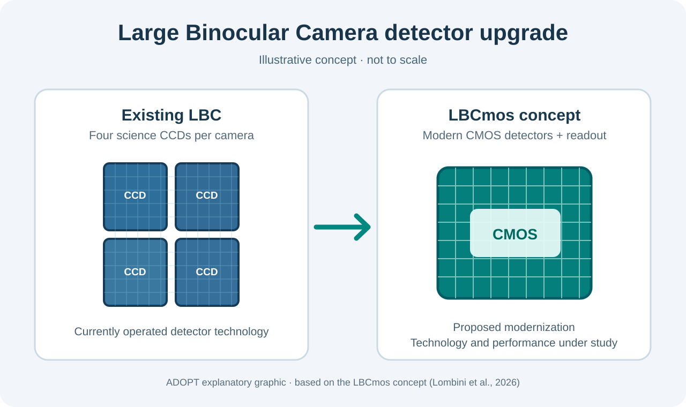

LBCmos
Exploring a CMOS detector upgrade for the LBT's established wide-field optical cameras.
Figures


Our contribution
Federico Battaini and Jacopo Farinato, members of ADOPT, are co-authors of the 2026 LBCmos instrumentation paper. Their involvement is part of a multi-institute study; specific engineering tasks are not assumed from authorship alone.
Selected publications
The LBCmos concept paper is listed alongside clearly identified context and original-camera references. No completed CMOS on-sky results are claimed.
- LBCmos: extending wide-field imaging and photometry capabilities at LBTO to the next decades ↗Proceedings of SPIE · Ground-based and Airborne Instrumentation for Astronomy XI
Direct LBCmos upgrade concept; the published author list includes Federico Battaini and Jacopo Farinato.
- The instrumentation program at the Large Binocular Telescope Observatory in 2024 ↗arXiv preprint
Observatory-wide instrumentation overview; contextual reference, not a paper reporting CMOS commissioning.
- The Large Binocular Camera: description and performances of the first binocular imager ↗Proceedings of SPIE
Foundational publication describing the original CCD-based LBC predecessor.